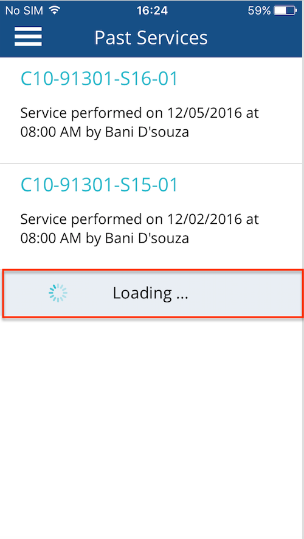
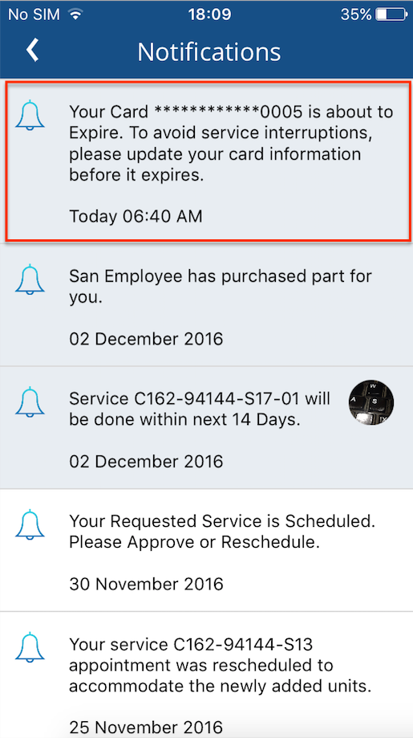
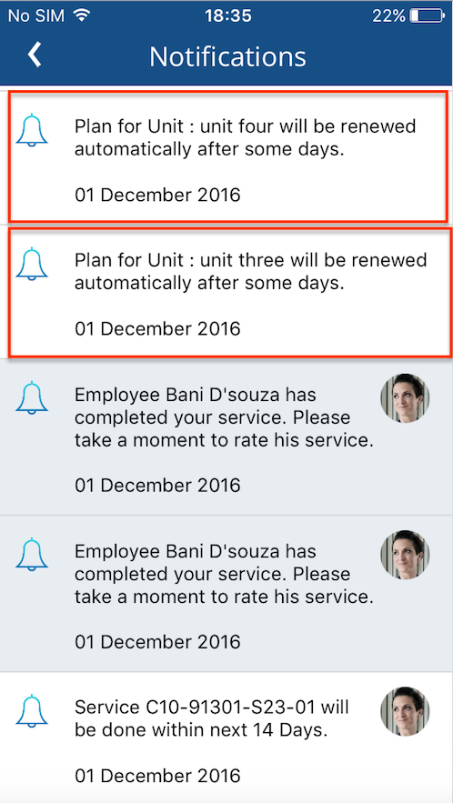
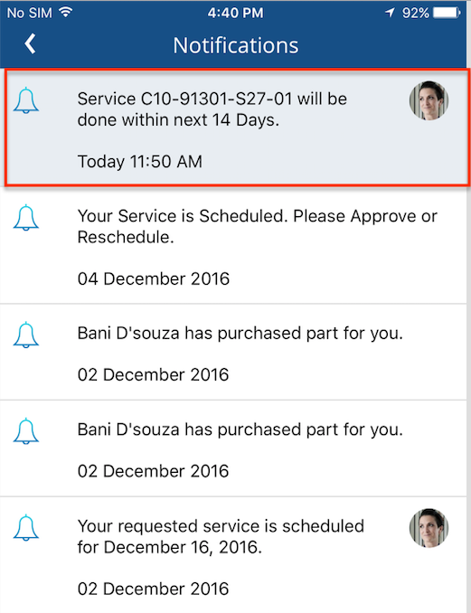
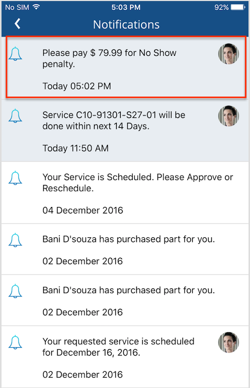
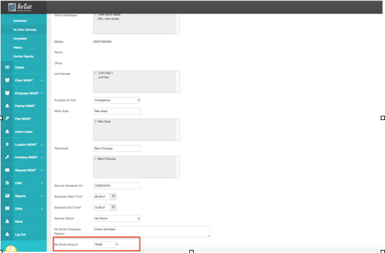
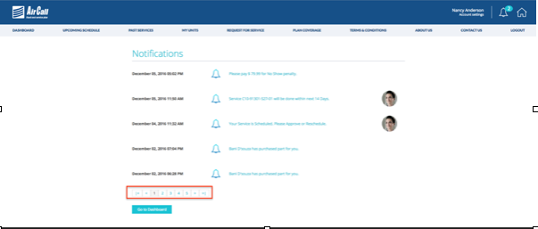
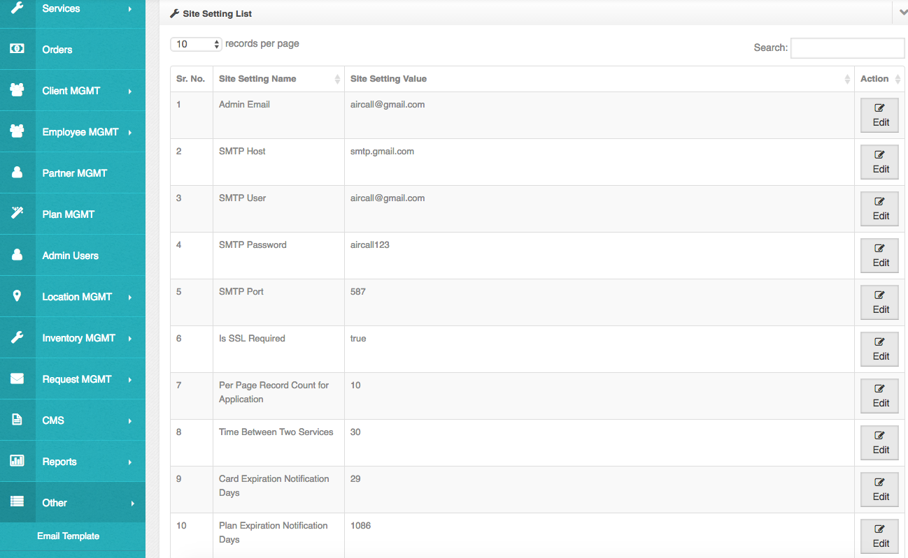
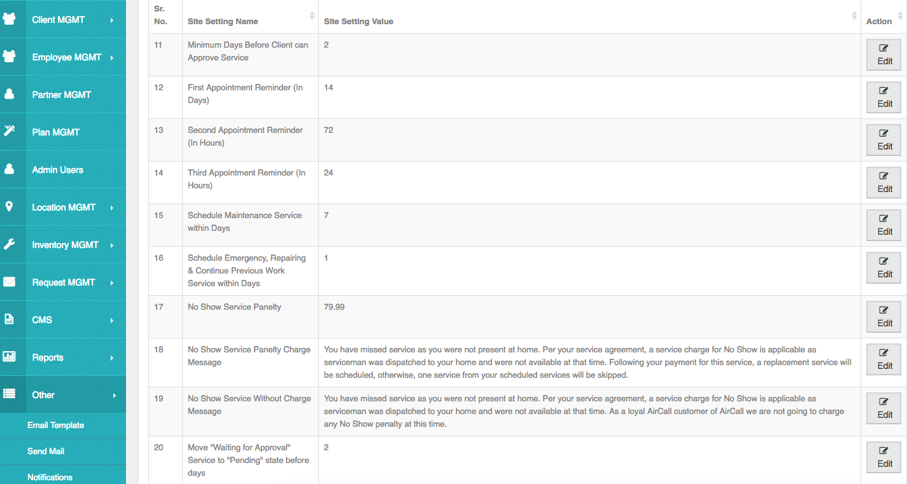
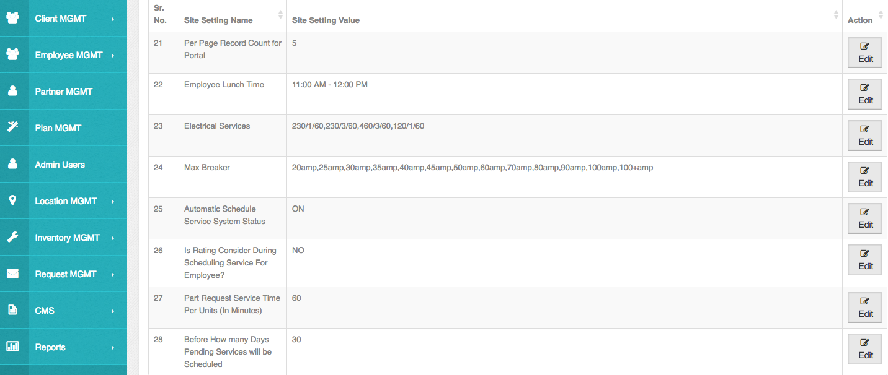

Site Settings
Many things needs to be dynamic. Admin will set some site settings from here. Below is the list of those.
1) Admin Email : AirCall needs to sends some emails. This is the email address from where email will be sent. Click on edit and admin can change the value.
2) SMTP Host: Each webmail has smtp host. For google, it is smtp.gmail.com. SMTP Host will connect to the server, verified USERNAME and PASSWORD for authentication to activate account. Click on edit and admin can change the value.
3) SMTP User : Add smtp username which will be an email. Click on edit and admin can change the value.
4) SMTP Password: Add your SMTP User’s password here. Click on edit and admin can change the value.
5) SMTP Port: Add SMTP port here. Click on edit and admin can change the value.
6) SMTP SSL: This is for secure mode for your email server. Click on edit and admin can change the value.
7) Per Page Record Count for Application: In application, many list screens will contain lots of records. If those data load in one time then application become slow. So this number indicates the bunch of records to load page wise. ex. If you have entered 10 then when you go to the screen it will load 10 records at a time after that another 10 records will be load and so on. Below are the screens where this settings will be affected.
• Client Application
1. My Units
2. Past Services
3. Notifications
• Employee Application
1. Service Reports
2. Unit List
3. Notifications

8) Time Between Two Services : Suppose, an employee John Andrew has assigned a service which with time 8:00 am to 9:00 am. So if another unit has purchased by any client and if scheduler will run and John Andrew is free than the service will be assigned him to with the time from 9:30 am to 10:30 am. The time of this gap i.e 30mins will be maintain from here. Click on edit and admin can change the value.
9) Card Expiration Notification Days : This field indicates that how many days before “card expiry date” admin wants to fire a notification to the client that client’s added card is going to expire. Suppose, if the admin has added 20, And the client’s card is going to expire on March 2017. Then that client will get a card expiry notification on 11th March 2017. Click on edit and admin can change the value.
 
10) Plan Expiration Notification Days : This field indicates that how many days before admin wants to fire a notification to client of Plan Expiry. Suppose if admin has added 30, And the client’s plan is going to expire on 20th March 2019. Then that client will get a plan expiry notification on 19th February 2019. Click on edit and admin can change the value.
 
11) Minimum Days Before Client can Approve Service : This setting allows admin to restrict client to accept “schedule service notification” before some days from “given scheduled date” in notification. The notification will be removed. Suppose, Admin has entered a value 2. And if client get a notification of schedule service for dated 23rd dec 2016. Then client will see that notification till 20th Dec 2016 and could accept also. But from 21st Dec 2016 that notification will be removed from the list. Click on edit and admin can change the value.
12) First Appointment Reminder (In Days) : This field allows admin to fire a first notification about scheduled Service to clients before the x days. This is the reminder notification of the scheduled service. Click on edit and admin can change the value.
 
13) Second Appointment Reminder (In Hours) : To fire a second reminder about scheduled Service to clients before the x hours. Admin can manage reminder hours from here. Suppose, if the admin has entered 72 in for this field. Then a reminder notification for a scheduled service will be fire to the client 72 hours before the scheduled service’s start time. Click on edit and admin can change the value.
14) Third Appointment Reminder (In Hours) : To fire a third(final) reminder about scheduled Service to clients before the x hours. Admin can manage reminder hours from here. Suppose, if the admin has entered 24 in for this field. Then a reminder notification for a scheduled service will be fire to the client 24 hours before the scheduled service’s start time. Click on edit and admin can change the value.
15) Schedule Maintenance Service within Days : A value entered for this field indicates the duration. When client request for Maintenance service then the nearest date (asking for schedule date) will be with this duration. For ex., Admin has entered 5 days. So when client request for maintenance service then the nearest date will be “Current date + 5 days”. Suppose current date is 10 Dec 2016. Then, 10 Dec 2016 + 5 days = 16 Dec 2016. So client can add maintenance service asking schedule on 16 Dec 2016 or onward.
16) Schedule Emergency, Repairing & Continue Previous Work Service within Days : A value entered for this field is indicate the duration. When the client request for Emergency, Repairing or Continue Previous Work service then the nearest date (asking for schedule date) will be with this duration. For ex., Admin has entered 1 days.So when client request for maintenance service then the nearest date will be“Current date + 1 days”.Suppose current date is 10 Dec 2016. Then, 10 Dec 2016 + 1 day = 11 Dec 2016. So client can add maintenance service asking schedule on 11 Dec 2016 or onward.
17) No Show Service Penalty : From here, this field indicates No Show service charges. By clicking on “Edit” button, admin can change the No Show service charges. In admin it will reflect in Services >> No Show Services >> Edit No Show Services : “No Show Amount”, from where admin can change amount also.
18) No Show Service Penalty Charge Message : From here, admin can manage a notification message which is fire to Client for No Show service with charges. By clicking on “Edit” button, admin can change the No Show service message.
 

19) No Show Service Without Charge Message : From here, admin can manage a notification message which is fire to Client for No Show service without charges. By clicking on “Edit” button, admin can change the No Show service message.
20) Move “Waiting for Approval” Service to “Pending” state before days : From here, admin can manage that before how many days, service will be moved to Pending Status if service is in state “Waiting for Approval” and client has not
performed any action on it. Suppose, We have entered 2 days. Now a scheduler run and a service C10-91301-S2-01 moved on “Waiting For Approval” state with asking scheduled date 12th Dec, 2016. If a Client of this service has not performed any action on it (accept/cancel) till 10th Dec, 2016. Then this service will be moved under Pending Service on 11th Dec, 2016.
By clicking on “Edit” button, admin can change the waiting time for service.
21) Per Page Record Count for Portal : From here, admin can manage that how many number of records need to load in one load.

Suppose, if admin has added 5, then when page gets load (lets take notification page), 5 records will be display for each page. This will work for “Notification" and “Request for Service” page. By clicking on “Edit” button, admin can change the data load size.
22) Employee Lunch Time : From here, Admin can manage employee’s lunch time from here. By clicking on “Edit” button, admin can update the lunch time of employee.
23) Electrical Services : It is a non inventory part type. From here admin can edit the values by comma separated.
24) Max Breaker : It is a non inventory part type. From here admin can edit the values by comma separated .
25) Automatic Schedule Service System Status : Admin can on/off automatic scheduler service. If admin doesn't want to schedule services automatically then he/she can stop it from here by making it “OFF”. By clicking on “Edit” button, admin can ON/OFF the settings for automatic service.
26) Is Rating Consider During Scheduling Service For Employee? : From here, admin can sets that employee’s ratings will be considered or not when assigning the employee to the service. If it is set to YES then system will consider the employee with higher ratings first during the assignment of the employee to the service. If it is set to NO then system will ignore the employee’s rating during the assignment of employee to the service.
27) Part Request Service Time Per Units (In Minutes) : From here, Admin can set a time duration in minutes for the Part Requested Service. For ex, If admin has set a value “20” for this field. An Employee1 has requested a part “TXV Valve” for Client1, Unit1. So when service will schedule, time will assign will have duration of 20 mins. Let's suppose 8:00 AM to 8: 20 AM. (client will see with +1hour, so 8:00 AM to 9:20 AM)
28) Before How many Days Pending Services will be Scheduled : From here admin can set the number of day before the pending service will get scheduled. For example, 1 unit is added in the system. 1st service is scheduled as per the rules. Now 2nd service has expected 1st January 2017 to 1st February 2017. And this variable is set to 15 days. Then scheduler will be run on 15th December 2016. and service will be scheduled as per the automatic rules. And if not scheduled then scheduler will be run again next day to schedule the service.
29) Before How many hours take panelty of reschedule: If user try to reschedule the service before x hours the user may charge for that. Those x hours will be mentioned here. If admin enter the 24 here then if user reschedule the service before 24 hours of service schedule time, user will be charged for it.
30) Late reschedule service panelty charge message: If Services under the no show section will be done with charges then this message will be sent as a notification. After the payment of mentioned amount, the service will be scheduled.
31) Late reschedule service without charge message: If Services under the no show section will be done without any charges to the client then this message will be sent as a notification.
32)Not renewed UnitPlan unsubscribe After Days: If user's plan is completed then user has chance to renew it within x days. After mentioned x days here, unit plan will be automatically unsubscribed.
33) Late Reschedule Dispaly Message: If user try to reschedule the service less than 24 hours then here mentioned message will be shown.
34) Service Reschedule Success Message: If user reschedule the service then after successful rescheduling, this message will be shown.
35) Before How Many Days Send Payment Due Notification: In recurring payment method, reminder will be sent x days before due date.
36) 1st Past Payment Due Reminder Notification Send Within Days: In recurring payment method, 1st reminder will be sent x days after due date.
37) 2nd Past Payment Due Reminder Notification Send Within Days: In recurring payment method, 2nd reminder will be sent x days after due date.
38) 3rd Past Payment due Reminder Notification Within Days: In recurring payment method, 3rd reminder will be sent x days after due date.
39) Sales agreement: While purchasing the new unit in the payment screen user will have to agree the sales agreements. That agreements will be managed here.
40) Service Time Slot1 for Emergency Service: Time slot1 for the emergency service. Which will be displayed while requesting the service and rescheduling the emergency service type.
41) Service Time Slot2 for Emergency Service: Time slot2 for the emergency service. Which will be displayed while requesting the service and rescheduling the emergency service type.
42) Emergency service cut off time(in minutes): It means by entering the minutes, number of minutes will be extended to do service after the actual working time of employee . It means if employee's working time is 8am to 6 pm and value of cut off time is 60 minutes then service can be assigned by extending the 60 minutes to the actual working time it means 8 am to 7 pm.
43) Requested Maintenance Service Submit Message: On submitting the request for maintenance type service this message will be shown.
44) Requested Repair Service Submit Message: On submitting the request for repair type service this message will be shown.
45) Requested Continuing previous work service Submit Message: On submitting the request for continuing previous type service this message will be shown.
46) Requested Emergency Service Submit Message: While requesting the emergency type of service this message will be shown to inform user that fee will be charged.
47) Late Cancel Display Message: If user wants to cancel the service less the 24 hours of scheduled service then this message will be shown.
48) Service Cancel Success Message: While user cancel the service from the schedule detail screen then tis message will be shown after successfull cancellation.



Created with the Personal Edition of HelpNDoc: Easily create HTML Help documents